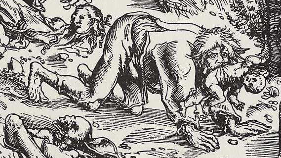

En las aldeas rumanas olvidadas, donde los bosques parecen devorar la luz de la luna y las montañas guardan secretos ancestrales, sobrevive la figura del Pricolici. Se dice que estas entidades malignas no son simples criaturas nocturnas, sino almas condenadas que regresan desde la muerte envueltas en odio y hambre sobrenatural. Los ancianos susurran sus nombres junto al fuego, pues creen que pronunciarlos demasiado fuerte puede atraer sus pasos invisibles hacia las ventanas de quienes escuchan.
Entre la niebla y el ulular del viento, los Pricolici son recordados como sombras capaces de adoptar formas monstruosas y recorrer los caminos rurales bajo la apariencia de enormes lobos de ojos humanos. Esta extraña figura al parecer proviene de individuos marcados por la maldad, hechiceros oscuros o personas que murieron consumidas por la venganza. Después de abandonar la tumba, sus espíritus vagan durante la noche buscando atormentar a sus propias familias y sembrar enfermedad, miedo y desgracia entre los vivos. A diferencia de otras criaturas del folclore europeo, los Pricolici poseen una naturaleza espectral, como si fueran una mezcla entre un fantasma y una bestia salvaje. Los relatos describen que sus cuerpos parecen desvanecerse entre los árboles antes de reaparecer más cerca, acompañados siempre por un silencio que paraliza a quienes los observan.
En algunos pueblos de Transilvania se cuentan historias sobre viajeros que desaparecieron después de escuchar extraños aullidos en medio de la madrugada. Los sobrevivientes hablan de figuras encorvadas observándolos desde los cementerios, criaturas cuyos ojos brillan como brasas moribundas entre la oscuridad. Según las creencias populares, los Pricolici tienen la capacidad de infiltrarse en los sueños de sus víctimas para debilitarlas lentamente, alimentándose del terror y la desesperación antes de manifestarse físicamente. Por ello, muchas familias antiguas colocan cruces de hierro, ajos y velas benditas en las puertas de sus hogares durante las noches de tormenta, intentando mantener alejadas a estas presencias malditas.
La figura del Pricolici permanece envuelta en una atmósfera de misterio que ha sobrevivido a través de generaciones. Más que simples monstruos, representan el miedo ancestral a aquello que regresa desde la muerte cargado de rencor y dolor eterno. Entre castillos en ruinas, bosques cubiertos de niebla y caminos silenciosos iluminados apenas por la luna, la leyenda continúa alimentando la imaginación de quienes se sienten atraídos por el lado más sombrío del folclore rumano. Y aún hoy, en ciertas noches frías de invierno, algunos aseguran que pueden escucharse pasos pesados y respiraciones profundas perdiéndose entre las montañas, como si los Pricolici todavía caminaran ocultos bajo el velo de la oscuridad.
© 2025 Ciudad de Sombras - Todos los derechos reservados